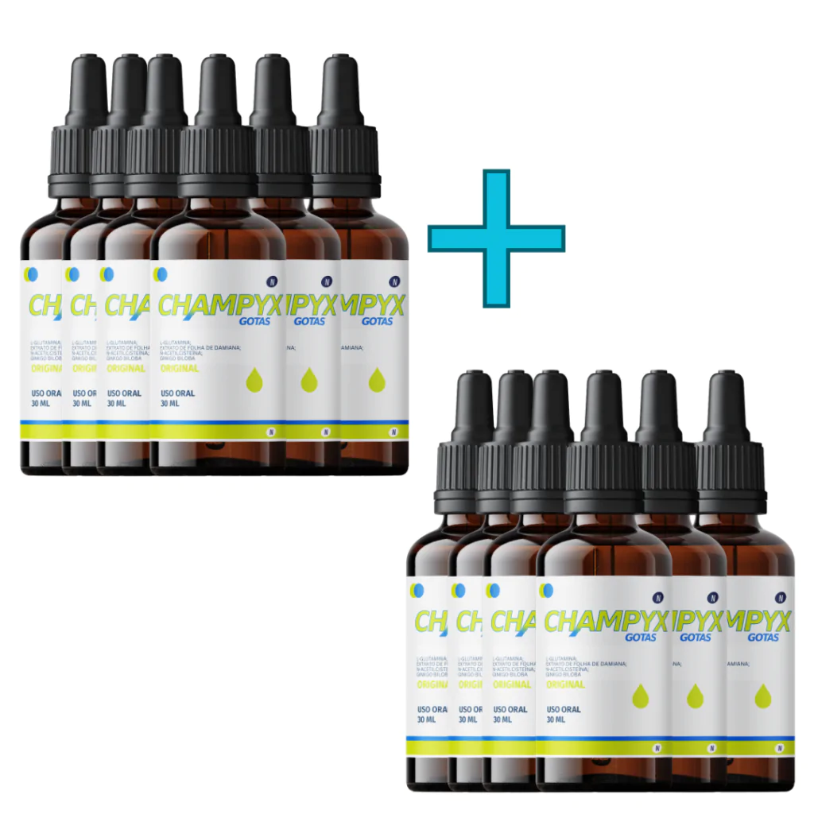

ATENÇÃO! Últimas unidades com 70% de Desconto!
A REVOLUÇÃO EM PARAR DE FUMAR NATURALMENTE! AGORA EM GOTAS...
Conquiste sua liberdade do cigarro com Champyx gotas!
Você está pronto para dar um passo decisivo em direção a uma vida mais saudável e livre do vício do cigarro? Se a resposta for sim, você está no lugar certo! Apresentamos o Champyx em gotas, a sua melhor ferramenta para finalmente deixar de fumar de forma eficaz e sem sofrimento.
Assita o vídeo e entenda.
EU QUERO TER UM PULMÃO SAUDÁVEL! ‹ ‹VOCÊ ESTÁ CUIDANDO DA SAÚDE DO SEU PULMÃO?
80% dos fumantes desenvolvem câncer no pulmão, segundo o Instituto Nacional do Câncer (Inca). Principais doenças
Principais doenças
Câncer de Pulmão, Doença Pulmonar Obstrutiva Crônica (DPOC), Bronquite Crônica, Enfisema, Infecções Respiratórias, Agravamento de Asma, Redução da Função Pulmonar, Morte Prematura e muito mais.
 Cigarro e a sua pele
Cigarro e a sua pele
Envelhecimento Prematuro, Pele Sem Brilho e Desidratada, Manchas e Descolorações, Acne e Cicatrização Lenta, Câncer de Pele, Diminuição da Elasticidade, Cicatrização Impedida, psoríase e eczema.
 Câncer de Pulmão
Câncer de Pulmão
A fumaça do cigarro contém mais de 7.000 substâncias químicas tóxicas, Essas substâncias danificam o DNA das células do pulmão, levando ao desenvolvimento de tumores cancerosos.
CHAMPYX GOTAS TAMBÉM MELHORA E AJUDA NOS SEGUINTES SINTOMAS DE:
Veja os benefícios do CHAMPYX para a melhora do pulmão. Repara das células epiteliais, Remodelação do tecido, Limpeza do sistema imunológico e Crescimento de novos vasos sanguíneos
Reduz problemas cardiovasculares devido ao foco de promover a normalidade da pressão arterial, auxilia nos níveis de colesterol saudável, regulariza o rítmo cardíaco e produz o fluxo para melhorar a boa circulação do sangue.
Restaura a saúde das gengivas, promove hálito fresco, auxilia no combate de germes e bactérias ingeridas causadas pelo uso do cigarro.
O que especialistas falam do Champyx em gotas?
Como pneumologista com décadas de experiência no tratamento de pacientes que desejam parar de fumar, estou entusiasmado em compartilhar minha experiência com o Champyx em gotas. Esta inovação no campo da cessação do tabagismo representa uma abordagem eficaz e promissora para ajudar as pessoas a abandonarem o hábito de fumar.
O Champyx em gotas é uma alternativa notável ao comprimido tradicional, oferecendo uma forma conveniente e flexível de administrar o medicamento. Ele contém um agente eficaz que age nos receptores de nicotina no cérebro, reduzindo os desejos e sintomas de abstinência associados ao tabagismo.
Qual o modo correto de uso?
Primeiro estágio: Limpeza do organismo Segundo estágio: Manutenção e tratamento da abstnência Uso sublingualPrimeiro estágio: Use 1ml (12 gotas) do CHAMPYX GOTAS diretamente na sua boca sublingual em jejum. -Para obter os melhores resultados, evite ingeri-lo junto com bebidas quentes ou geladas. Isso pode afetar a eficácia do produto e diminuir seus benefícios.
Segundo estágio: Use 4 gotas em três periodos do dia, a partir do meio dia. Para alcançar os resultados desejados, é essencial seguir as instruções de dosagem. O segundo estágio só é recomendado em momentos fortes de abstnência.
CONHEÇA NOSSAS INSTALAÇÕES
CHAMPYX GOTAS é produzido com todo cuidado e carinho do mundo! EU QUERO TER UM PULMÃO SAUDÁVEL! ‹ ‹ENTENDA POR QUE NOSSA FÓRMULA É DESTAQUE NO MERCADO!
O Segredo por Trás da Fórmula Americana que está sendo um SUCESSO NO BRASILEla é usada como uma erva medicinal com diversos benefícios, como: Equilíbrio hormonal, Estimulante sexual, Redução do estresse e ansiedade, Estimulação digestiva, Energia e foco. Estimula o Foco Aumenta a Energia Elimina a Ansiedade.
O agente mais utilizado para parar de fumar e atua como um agonista parcial altamente seletivo no nAChR α4β2 e um agonista completo no receptor nicotínico de acetilcolina α7. Melhora a saúde cerebral combatendo o tabagismo Melhora saúde pulmonar em geral Melhora a circulação sanguínea.
Combater o estresse oxidativo, neutralizando os radicais livres e protegendo as células do corpo contra danos causados pelos oxidantes. Diminui o Estresse Elimina a vontade do cigarro Acaba com o efeito rebote do cigarro.
A glutamina pode ajudar a reduzir os desejos por nicotina. Isso ocorre porque a glutamina é convertida em glutamato, que é um neurotransmissor envolvido na regulação dos desejos e na resposta ao estresse. Suplementar com glutamina pode ajudar a equilibrar esses neurotransmissores. Redução de desejos por nicotina Alívio de sintomas de abstinência Manutenção da saúde intestinal Suporte à função imunológica Energia e disposição.
Esses componentes agem diretamente no sistema nervoso, reconstruindo todo o sistema de dependência de nicotina, agindo de forma imediata no alívio dos sintomas das dores e problemas associados ao ato de parar de fumar. Redução dos danos causados pelo tabagismo Apoio ao sistema nervoso Melhora o Metabolismo da serotonina Melhora da saúde mental.
O CHAMPYX EM GOTAS É 7 VEZES MAIS PODEROSO DO QUE AS PÍLULAS, COMPRIMIDOS E ADESIVOS
Sua fórmula avançada natural e exclusiva é meticulosamente desenvolvida para ser 7 vezes mais potente e eficaz do que as cápsulas tradicionais. Prepare-se para uma transformação real em sua jornada para parar de fumar.
Chegou a hora de tomar o controle da sua vida e dizer adeus ao cigarro de uma vez por todas com a ajuda poderosa do CHAMPYX GOTAS!
DEPOIMENTO DOS NOSSOS CLIENTES
Preços especiais por tempo limitado
Recomendamos o tratamento de 3 a 12 meses para uma restauração efetiva e um efeito duradouro completo.
Tratamento para 1 ANO
De R$882,10 por apenas
12x de
69,98
ou R$ 697,00 à vista!
Frete Gratis
COMPRAR AGORA
Tratamento para 1 ANO
De R$882,10 por apenas
12x de
69,98
ou R$ 697,00 à vista!
Frete Gratis
COMPRAR AGORA
Tratamento para 1 ANO
De R$882,10 por apenas
12x de
69,98
ou R$ 697,00 à vista!
Frete Gratis
COMPRAR AGORA
Tratamento para 1 ANO
De R$882,10 por apenas
12x de
69,98
ou R$ 697,00 à vista!
Frete Gratis
COMPRAR AGORA
VOCÊ IRÁ RECEBER O SEU CODIGO DE RASTREIO NO SEU EMAIL
QUEM EXPERIMENTOU O CHAMPYX GOTAS RECOMENDA!
"Há anos, fumar era uma parte inegociável da minha vida. Eu tentei parar várias vezes, mas sempre voltava ao cigarro. No entanto, quando meu médico sugeriu o Champyx em gotas, algo mudou. A flexibilidade de dosagem tornou mais fácil para mim ajustar o tratamento às minhas necessidades. Com o apoio do medicamento e um plano personalizado, finalmente consegui parar de fumar. A vareniclina ajudou a reduzir os desejos de maneira notável, tornando a jornada muito mais suportável. Agora, me sinto mais saudável, com mais energia e livre do tabaco."
"Fumar estava afetando minha saúde e minha qualidade de vida. Eu estava cansado de tentar parar por conta própria, até que meu médico recomendou o Champyx em gotas. Eu estava cético no início, mas decidi tentar. A flexibilidade das gotas foi fundamental para mim, pois eu podia adaptar a dosagem conforme necessário. Durante o tratamento, senti uma redução real nos desejos de fumar, e isso me deu confiança para seguir em frente. Hoje, estou orgulhoso de dizer que estou livre do cigarro e me sinto incrivelmente bem. Champyx gotas fez toda a diferença para mim."
"Fumar era um hábito que eu mantinha por décadas, e parar parecia uma tarefa impossível. Mas então, meu médico me apresentou ao Champyx gotas. A possibilidade de personalizar a dosagem me deu a esperança de que finalmente poderia deixar o cigarro para trás. O Champyx realmente fez a diferença na minha jornada para parar de fumar. Ele reduziu meus desejos e me ajudou a enfrentar os momentos difíceis. Hoje, minha saúde melhorou significativamente, e estou grata por ter encontrado essa solução."
"Fumar estava prejudicando minha saúde e minha família estava preocupada. Eu já havia tentado parar várias vezes sem sucesso, mas o Champyx gotas fez toda a diferença. A flexibilidade de dosagem me permitiu adaptar o tratamento ao meu ritmo, e os desejos por nicotina diminuíram significativamente. Com a ajuda do Champyx, finalmente consegui vencer o vício. Minha qualidade de vida melhorou, e agora posso aproveitar mais momentos com minha família sem o peso do cigarro."
"O tabagismo era uma parte arraigada da minha vida, e eu sabia que precisava parar, mas sempre parecia impossível. Quando meu médico me recomendou o Champyx em gotas, decidi tentar. A flexibilidade das gotas tornou o tratamento acessível e eficaz para mim. Com o passar do tempo, os desejos diminuíram gradualmente. Hoje, estou orgulhosa de dizer que estou livre do cigarro. O Champyx em gotas realmente me deu uma nova chance, e minha saúde e energia melhoraram consideravelmente."
Quer falar com algum de nossos atendentes?
Se você possui dúvidas e quer falar direto com uma de nossas consultoras,disponibilizamos um Whatsapp Exclusivo. Para acessar clique no botão abaixo.
Satisfação garantidaou o seu dinheiro de volta!
Confiamos tanto na eficácia do Champyx Gotas que caso você utilize ele durante 90 dias e não tenha resultados, devolvemos o seu dinheiro. Isso mesmo! Resultados em 90 Dias ou seu dinheiro de volta.
PERGUNTAS FREQUENTES
Invista em um produto de qualidade comprovada, sendo 7x mais eficaz que as cápsulas para parar de fumar.